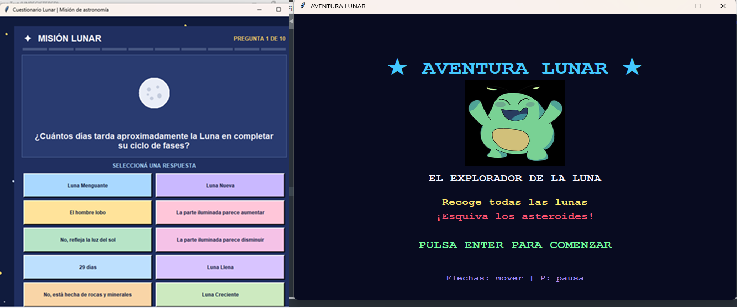
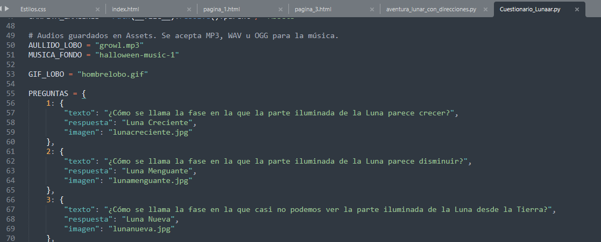
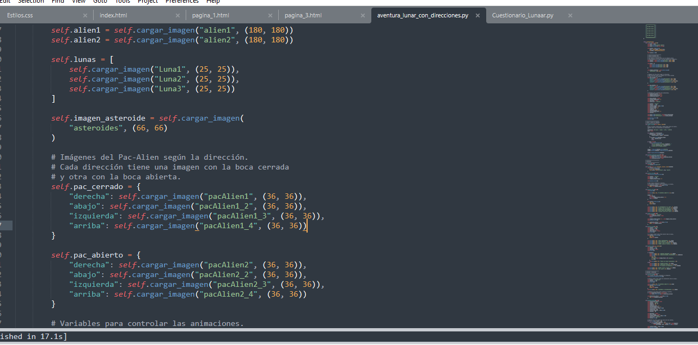

Desarrollo de videojuegos con Python
Durante el año trabajamos con Python, un lenguaje de programación que nos permitió desarrollar diferentes programas y videojuegos. En esta sección presentamos dos de nuestros proyectos: Cuestionario Lunar y Aventura Lunar.
Aunque ambos comparten la temática de la Luna, cada uno propone una experiencia diferente. El primero es un juego de preguntas y respuestas, mientras que el segundo presenta un desafío de exploración dentro de un laberinto.
1. Cuestionario Lunar
¿En qué consiste el juego?
El Cuestionario Lunar es un videojuego didáctico de preguntas y respuestas sobre nuestro satélite natural. El objetivo es poner a prueba los conocimientos del jugador acerca de las fases lunares, sus características y algunas curiosidades.
La partida contiene diez preguntas que aparecen en un orden aleatorio, evitando que se presenten siempre de la misma manera. Para cada pregunta se ofrecen diez opciones de respuesta, que también cambian de posición aleatoriamente.
Cuando el jugador selecciona una opción, el programa comprueba si es correcta. Si acierta, suma un punto y aparece un mensaje de felicitación. Si se equivoca, se muestra cuál era la respuesta correcta.
Después de responder, aparecen imágenes relacionadas con la pregunta. Algunas representan las fases de la Luna, mientras que la última incluye un GIF animado de un hombre lobo. Al completar las diez preguntas, se muestra el puntaje final y se ofrece la posibilidad de volver a jugar.
Herramientas y bibliotecas utilizadas
Para desarrollar este videojuego se utilizaron diferentes herramientas de Python:
Python
Es el lenguaje de programación utilizado para escribir las instrucciones, organizar las preguntas, comprobar las respuestas y controlar el funcionamiento general del videojuego.
Tkinter
Es la biblioteca utilizada para crear la interfaz gráfica. Permite construir la ventana principal, organizar las diferentes pantallas y agregar elementos como textos, botones, paneles y barras de progreso.
Random
Esta biblioteca permite realizar selecciones aleatorias. En el proyecto se utiliza para mezclar el orden de las preguntas, seleccionar cuál aparecerá durante la partida y cambiar la posición de las respuestas.
Pillow
Pillow es una biblioteca que permite abrir, modificar y mostrar imágenes. Se utiliza para cargar las fotografías de las fases lunares y reproducir el GIF animado del hombre lobo.
Pygame
Esta biblioteca se utiliza para incorporar el sonido. Permite reproducir la música de fondo durante la partida y agregar el efecto de sonido del hombre lobo cuando aparece su animación. La música se reproduce en bucle y el aullido se escucha dos veces consecutivas.
Las preguntas y sus respuestas
Las diez preguntas se encuentran organizadas en una estructura llamada PREGUNTAS. Cada una contiene su enunciado, la respuesta correcta y, cuando corresponde, el nombre de una imagen o GIF que se mostrará después de responder.
Además, se utiliza una lista llamada RESPUESTAS que reúne las opciones disponibles para el jugador. De esta manera, el programa puede mostrar las distintas alternativas sin tener que escribir cada botón por separado.
Funciones principales
Las funciones permiten dividir el programa en diferentes tareas, facilitando su organización y funcionamiento. Algunas de las más importantes son:
- iniciar_juego(): prepara una nueva partida, reinicia el puntaje, mezcla las preguntas y comienza la reproducción de la música.
- siguiente_pregunta(): selecciona una pregunta disponible, actualiza el enunciado y organiza las opciones de respuesta en un orden aleatorio.
- comprobar(b): recibe el botón seleccionado, verifica si su respuesta es correcta, actualiza el puntaje y muestra el resultado correspondiente.
- mostrar_imagen_respuesta(datos): muestra la imagen o animación relacionada con la pregunta después de que el jugador responde.
- mostrar_gif_local(nombre): carga el GIF del hombre lobo y prepara sus diferentes fotogramas para reproducir la animación.
- iniciar_audio(): prepara los sonidos y reproduce la música de fondo desde el comienzo.
- terminar(): finaliza la partida y muestra la puntuación obtenida junto con un mensaje según el desempeño del jugador.
¿Cómo funciona una partida?
- Se abre la ventana inicial y aparece el botón COMENZAR.
- Al comenzar, se reinicia el puntaje y se mezclan las preguntas.
- El jugador lee la pregunta y selecciona una de las diez respuestas.
- El programa comprueba la elección y muestra si fue correcta.
- Se actualiza el puntaje y aparece una imagen relacionada con la pregunta.
- Después de unos segundos, aparece la siguiente pregunta.
- Al completar las diez preguntas, se muestra el resultado final.
- El jugador puede comenzar una nueva partida o salir del juego.
El tiempo de espera entre preguntas es de tres segundos. Sin embargo, en la pregunta del hombre lobo se extiende a ocho segundos para permitir disfrutar de la animación y su efecto de sonido.
2. Aventura Lunar
¿En qué consiste el juego?
Aventura Lunar es un videojuego inspirado en la dinámica de Pac-Man. El jugador controla a Dell, un pequeño alienígena que debe recorrer un laberinto y recoger todas las Lunitas distribuidas por el escenario.
Mientras explora el laberinto, Dell debe esquivar los asteroides que caen desde la parte superior de la pantalla. Cada vez que uno lo alcanza, se registra un impacto. Si recibe tres impactos, la misión termina y se produce una derrota.
Para ganar, es necesario recoger todas las Lunitas antes de alcanzar el límite de impactos. Cuando se completa el objetivo, aparece una pantalla de victoria que muestra el tiempo que tardó el jugador en finalizar la misión.
Herramientas y bibliotecas utilizadas
Python
Se utiliza para desarrollar toda la lógica del videojuego: el movimiento del personaje, la distribución de las Lunitas, la aparición de asteroides, las colisiones y las condiciones necesarias para ganar o perder.
Tkinter
Al igual que en el Cuestionario Lunar, se utiliza para construir la interfaz gráfica. En este caso, su componente Canvas permite dibujar el laberinto, mostrar los personajes, representar los objetos y actualizar constantemente los elementos del escenario.
Random
Permite introducir elementos aleatorios en el juego. Se utiliza para distribuir diferentes tipos de Lunitas por el laberinto y determinar la posición y velocidad con la que aparecen los asteroides.
Pillow
Esta biblioteca permite cargar y adaptar las imágenes utilizadas en el videojuego. Se emplea para mostrar los dibujos de Dell, sus diferentes posiciones, las Lunitas y los asteroides.
Time y Math
La biblioteca Time permite medir el tiempo de la partida, controlar los intervalos de movimiento y determinar cuándo deben aparecer nuevos asteroides.
Por otro lado, Math se utiliza para calcular la distancia entre Dell y los asteroides, permitiendo detectar cuándo se produce una colisión.
La organización del laberinto
El escenario está construido mediante una lista llamada LABERINTO. Esta contiene diferentes filas de caracteres que representan la distribución del mapa.
El símbolo # representa una pared, mientras que los espacios vacíos representan los caminos por los que puede desplazarse el personaje.
El laberinto está organizado en una cuadrícula de 13 filas y 18 columnas. Cada casilla tiene un tamaño de 40 píxeles, lo que permite calcular la posición de los elementos dentro del escenario.
La clase AventuraLunar
A diferencia del Cuestionario Lunar, este videojuego organiza gran parte de su funcionamiento mediante una clase llamada AventuraLunar.
Una clase permite agrupar diferentes variables y funciones relacionadas con un mismo objeto o programa. En este caso, se encarga de controlar el personaje, las pantallas, los movimientos y los elementos del juego.
Funciones y métodos principales
- __init__(): prepara la ventana, carga las imágenes, configura las variables y establece los controles del teclado.
- cargar_imagen(): busca las imágenes dentro de la carpeta Assets, las adapta al tamaño necesario y las prepara para mostrarlas.
- mostrar_inicio(): presenta la pantalla inicial del videojuego y activa una animación que alterna las imágenes de Dell.
- preparar_partida(): reinicia las variables, coloca al personaje en su posición inicial y distribuye las Lunitas por los caminos del laberinto.
- dibujar_juego(): actualiza visualmente el escenario, mostrando el laberinto, las Lunitas, los asteroides, el personaje y los contadores.
- tecla_presionada(): detecta las teclas utilizadas por el jugador para moverse, pausar, comenzar o salir.
- mover_jugador(): controla el desplazamiento de Dell, comprueba que no atraviese las paredes y recoge las Lunitas cuando pasa sobre ellas.
- actualizar_asteroides(): genera nuevos asteroides, controla su caída y comprueba si alcanzan al personaje.
- mostrar_fin(): presenta la pantalla de victoria o derrota, dependiendo del resultado de la partida.
- bucle(): mantiene el funcionamiento continuo del videojuego, actualizando los movimientos y el escenario mientras la partida está activa.
Animaciones y movimientos
Uno de los aspectos que trabajamos en este videojuego fue la incorporación de diferentes imágenes para darle más movimiento y personalidad al personaje.
Dell cuenta con imágenes orientadas hacia cuatro direcciones: arriba, abajo, izquierda y derecha. Además, cada dirección tiene dos versiones, una con la boca abierta y otra con la boca cerrada.
El programa alterna estas imágenes mientras el personaje se desplaza, generando una animación que simula el movimiento de su boca. Cuando se detiene, vuelve a mostrar la imagen correspondiente con la boca cerrada.
También se incorporó un efecto de parpadeo temporal cuando Dell recibe un impacto, acompañado de un período de protección durante el cual no puede recibir otro daño.
Controles del videojuego
- Flechas del teclado: permiten mover a Dell por el laberinto.
- W, A, S y D: permiten realizar los mismos movimientos utilizando estas teclas.
- P: pausa el videojuego y permite reanudarlo.
- Enter: comienza una partida, permite volver a jugar después de finalizar o regresar al menú desde la pausa.
- Escape: cierra el videojuego.
¿Cómo funciona una partida?
- Se abre el menú principal y aparecen las imágenes de presentación de Dell.
- Al presionar Enter, comienza una breve transición antes de iniciar la partida.
- Se prepara el laberinto y se distribuyen las Lunitas por los diferentes caminos.
- El jugador utiliza el teclado para desplazarse y recoger todos los objetos.
- Mientras tanto, aparecen asteroides que caen desde la parte superior del escenario.
- Si un asteroide alcanza a Dell, aumenta el contador de impactos. Después de tres impactos, se produce una derrota.
- Si consigue recoger todas las Lunitas, se completa la misión y aparece el tiempo final.
- Finalmente, el jugador puede volver a intentarlo o salir del videojuego.
3. Referencias visuales
A continuación, se presentan algunas imágenes de los videojuegos y de su desarrollo mediante código.


4. Conclusión
El desarrollo de estos dos videojuegos nos permitió aplicar diferentes conocimientos de programación utilizando Python y sus bibliotecas.
A través del Cuestionario Lunar trabajamos principalmente con preguntas, respuestas, listas, selecciones aleatorias, funciones e interfaces gráficas. También incorporamos imágenes, animaciones y efectos de sonido para enriquecer la experiencia del jugador.
Por otro lado, Aventura Lunar nos permitió trabajar con movimientos, coordenadas, colisiones, animaciones, medición del tiempo y actualización constante de los elementos de un videojuego.
Aunque ambos proyectos tienen objetivos y mecánicas diferentes, comparten una misma temática y nos permitieron experimentar con distintas posibilidades de la programación. Cada uno representó una oportunidad para aprender, resolver problemas y desarrollar nuestras propias ideas.